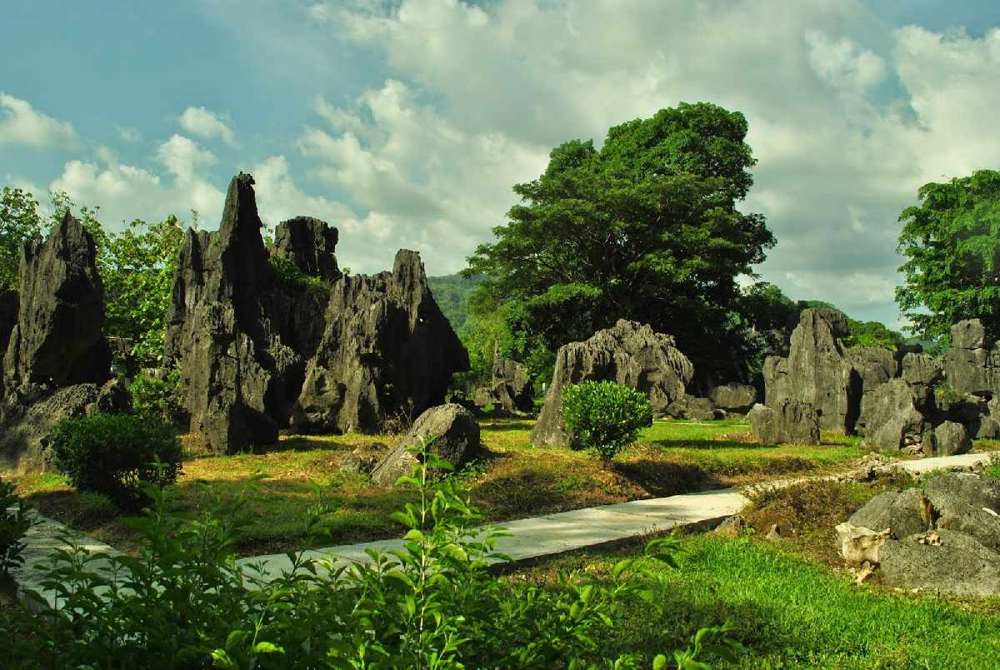
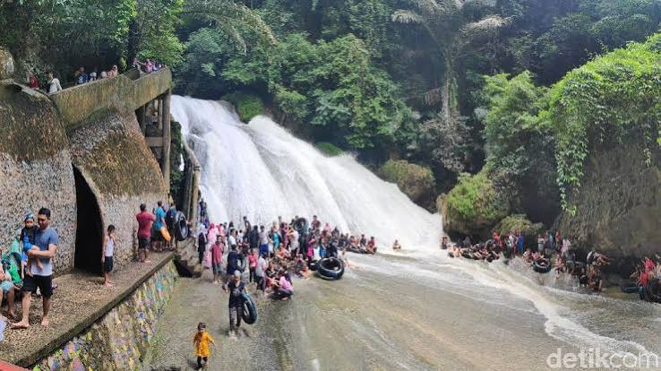
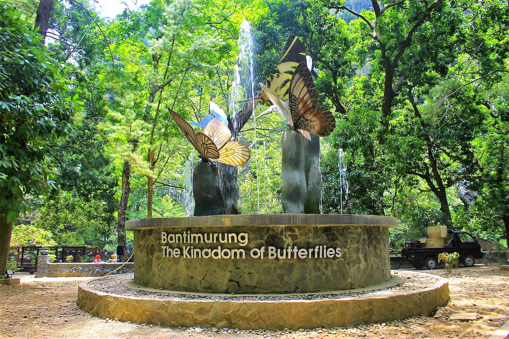

Keindahan Alam
Taman Nasional Bantimurung memiliki kawasan alam yang menarik untuk dikunjungi. Pengunjung dapat menikmati suasana alam, air terjun, kawasan karst, dan gua.
Pesona Alam dan Keanekaragaman Hayati di Sulawesi Selatan
Taman Nasional Bantimurung merupakan salah satu kawasan wisata alam yang berada di Sulawesi Selatan. Kawasan ini memiliki pemandangan alam yang menarik serta berbagai jenis flora dan fauna.
Bantimurung dikenal dengan air terjun, kawasan karst, gua, serta berbagai jenis kupu-kupu yang dapat ditemukan di kawasan ini.
Taman Nasional Bantimurung memiliki kawasan alam yang menarik untuk dikunjungi. Pengunjung dapat menikmati suasana alam, air terjun, kawasan karst, dan gua.
Salah satu hal yang menjadi daya tarik Bantimurung adalah keberadaan berbagai jenis kupu-kupu. Selain itu, kawasan ini juga memiliki berbagai jenis tumbuhan dan hewan.



Beberapa aktivitas yang dapat dilakukan pengunjung antara lain:
Taman Nasional Bantimurung berada di Kabupaten Maros, Provinsi Sulawesi Selatan. Kawasan ini dapat menjadi salah satu pilihan wisata alam bagi masyarakat Sulawesi Selatan maupun wisatawan dari daerah lain.
| Informasi | Keterangan |
|---|---|
| Nama | Taman Nasional Bantimurung |
| Provinsi | Sulawesi Selatan |
| Kabupaten | Maros |
| Jenis Wisata | Wisata Alam |
| Daya Tarik | Air terjun, karst, gua, dan kupu-kupu |
| Informasi dapat berubah sesuai kondisi dan kebijakan pengelola. | |